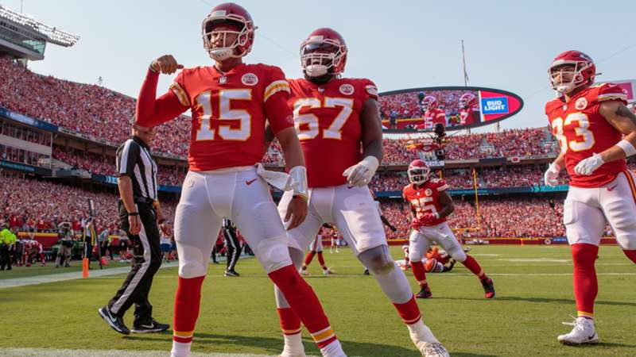
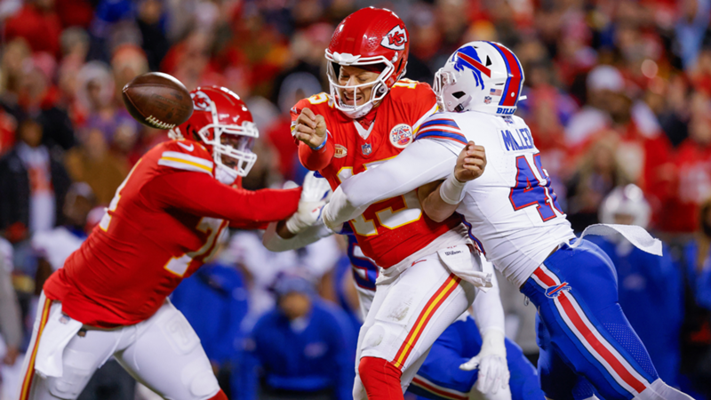
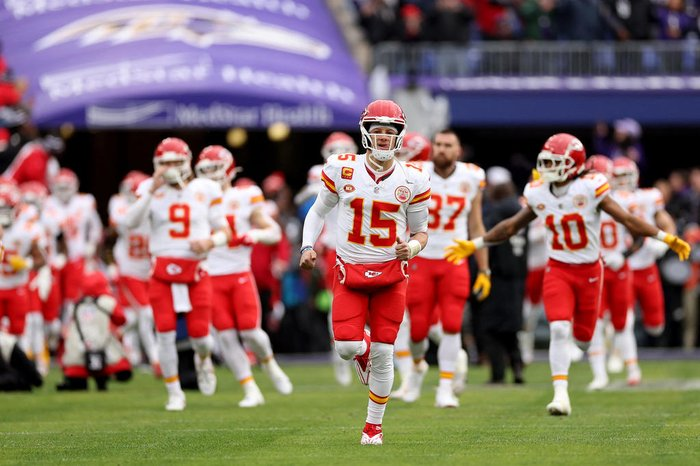
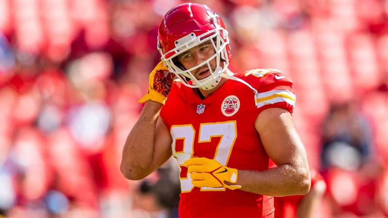
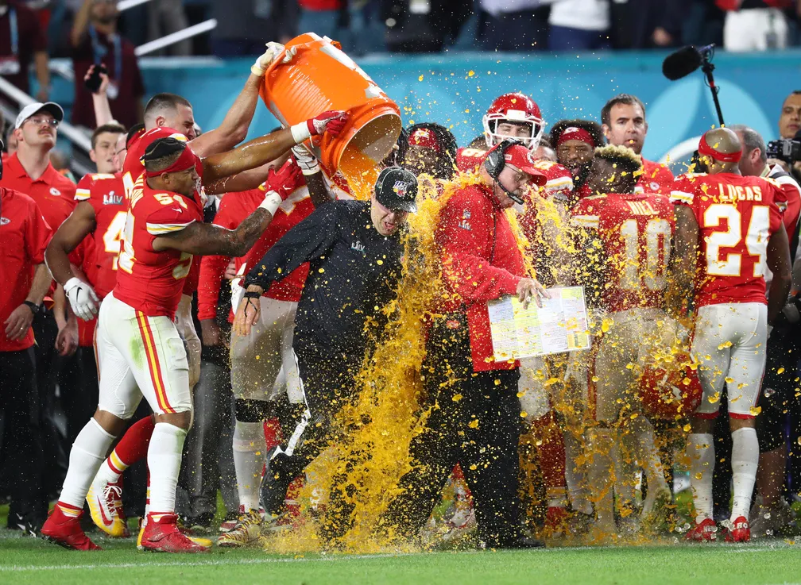

Temporada Regular

A temporada regular de 2023 foi um verdadeiro teste de resistência e habilidade para o Kansas City Chiefs. Desde o início, a equipe mostrou porque é uma das mais temidas na NFL, com uma combinação implacável de ofensiva poderosa e defesa estratégica. Liderados pelo talentoso quarterback Patrick Mahomes, os Chiefs acumularam vitórias impressionantes contra adversários de alto nível, solidificando sua posição como líderes da AFC West. Cada jogo foi uma demonstração de competência técnica e espírito de equipe, deixando claro que os Chiefs estavam determinados a alcançar o Super Bowl novamente.
Imprevistos

A jornada para o topo, no entanto, não foi isenta de desafios. A temporada regular trouxe uma série de imprevistos que testaram a resiliência do time. Lesões de jogadores chave ameaçaram desestabilizar a equipe, exigindo ajustes táticos e a entrada de novos talentos para preencher as lacunas. Além disso, alguns jogos inesperadamente difíceis contra adversários menos cotados trouxeram lições valiosas e reforçaram a necessidade de nunca subestimar oponentes. Apesar desses obstáculos, os Chiefs mostraram uma capacidade extraordinária de adaptação e perseverança.
Playoffs

Nos playoffs, o Kansas City Chiefs elevou seu jogo a novos patamares. A equipe enfrentou alguns dos melhores times da liga, cada partida sendo um verdadeiro espetáculo de estratégia e habilidade. Patrick Mahomes brilhou, conduzindo a ofensiva com precisão cirúrgica, enquanto a defesa se mostrou impenetrável nos momentos decisivos. Os jogos foram repletos de momentos emocionantes, incluindo viradas espetaculares e jogadas inesquecíveis que garantiram a passagem dos Chiefs para o Super Bowl. Cada vitória nos playoffs não foi apenas um triunfo, mas uma confirmação do espírito indomável da equipe.
As dúvidas

Apesar do sucesso, a temporada não foi isenta de dúvidas. Torcedores e analistas questionaram se o Kansas City Chiefs poderia manter seu alto nível de desempenho frente a adversidades contínuas. A pressão estava sempre presente, e cada jogo era uma oportunidade tanto de afirmação quanto de potencial queda. A consistência do time foi colocada à prova repetidamente, e a capacidade de Mahomes e seus companheiros de equipe em lidar com a pressão foi um ponto de discussão constante. No entanto, a cada dúvida levantada, os Chiefs responderam com atuações ainda mais impressionantes.
A redenção

A vitória no Super Bowl de 2024 foi a culminação de uma temporada de redenção para o Kansas City Chiefs. Após uma campanha de altos e baixos na temporada anterior, a equipe estava determinada a provar seu valor e silenciar os críticos. A jornada para o título foi marcada por uma combinação de trabalho árduo, dedicação e um desejo ardente de reconquistar a glória. No final, os Chiefs não apenas venceram o Super Bowl, mas também redimiram-se completamente, solidificando sua posição como uma das dinastias mais dominantes da NFL moderna. A vitória foi uma celebração de resiliência, talento e a determinação incansável de uma equipe que nunca desistiu de seus sonhos.